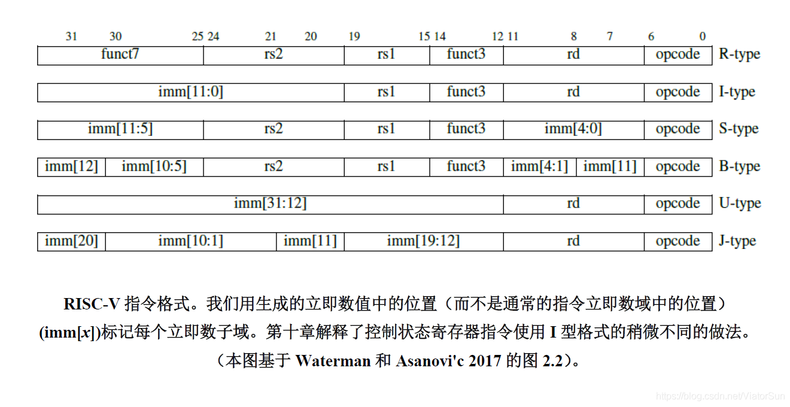
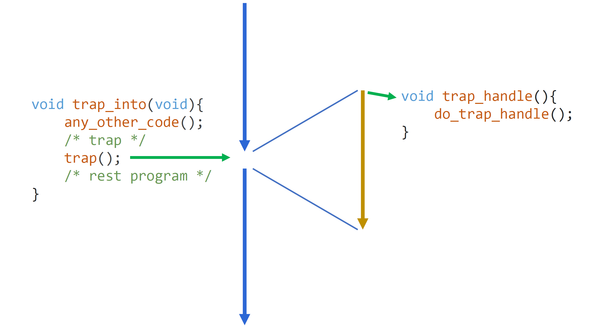
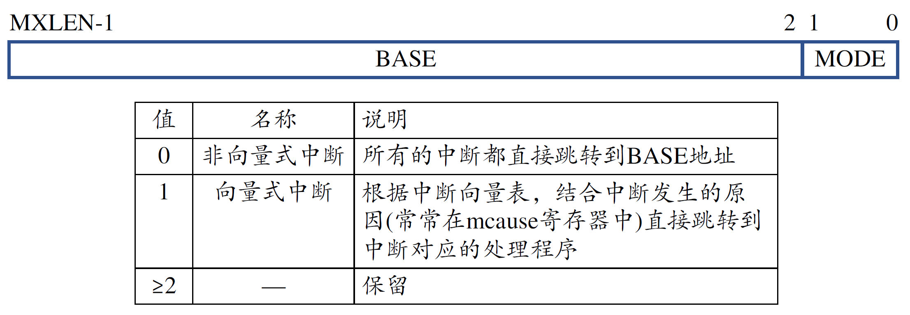
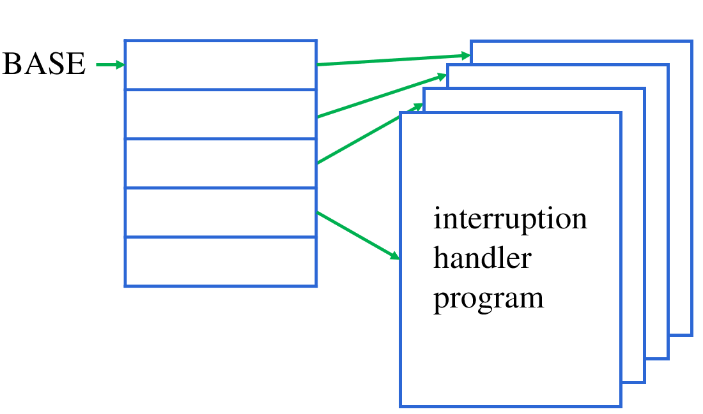
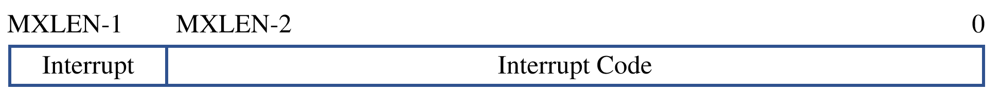

软硬联系的语言：指令系统
指令系统，也被称为指令集架构，作为计算机体系结构中的一个非常关键的部分。它定义了一个计算机可以执行的各种指令，通常一条指令包括操作码、操作数、地址码等。整个汇集起来的指令系统便可以看作是计算机软件和硬件之间的接口，是计算机体系结构的基础。
通常指令系统分为精简指令集（RISC）和复杂指令集（CISC）两种，这两者的主要区别就在如同其名所体现的，在于指令集的复杂度和执行方式。对于RISC架构而言，其特点在于指令长度相对较短、执行速度快、硬件的复杂度相对较低、更快的时钟速度、复杂任务需要更多指令数量、适合编译优化和流水线的运用；而对于CISC架构而言，一条指令就可以对应执行多个操作，指令本身相对复杂，需要较长的指令周期才能完成，同时对CPU也提出了更高的要求，需要更加复杂、功能性更强的CPU来支持，这就意味着较高的成本支出。
总的说来，RISC架构适合于需要高性能和低功耗的应用场景，如嵌入式设备、移动设备终端等；而CISC架构则更适合对指令集成度要求比较高、需要处理复杂操作的场景，如大型的服务器、桌面电脑等。原因在于，CISC定义了许多“复杂”的操作，需要比较复杂的硬件支持。但是在现如今的实际应用中，RISC和CISC的区别实际上也在逐渐的淡化，CPU与编译器在不断的优化，CISC也可以实现近乎于RISC的高性能，而RISC也能实现一些复杂的指令集。
下面我们主要介绍精简指令集体系结构。
精简指令集系统及其设计的基本原则
对于精简指令集系统（RISC）而言，它有许多的代表，其中比较著名的就包括了由Stanford的几位教授在1981年共同创建的MIPS架构，有由IBM公司在1990年代初期为了其服务器产品线开发的高效能的Power架构，有当今仍然广受欢迎且使用广泛的ARM处理器架构，也有开源的福音，由Berkeley的一些学者提出的RISC-V架构。
对于这些RISC体系结构的代表，它们都具有高性能、低功耗等特点，当然，这是它们作为精简指令集所应该具备的特性，这也使得在如下的一些方面，得到了较为广泛的应用：
1、嵌入式系统：作为被嵌入到其他设备中的计算机系统，用于控制各种设备的操作和信息处理等，RISC处理器应用广泛。低功耗使其降低了对电源的需求，为系统的组成提供了更多的可能；高效的指令处理效率，使得在处理应对实时数据时，更加高效更加适应；较之其他更强的兼容性，更加贴合机器代码和汇编程序，使得它可以实现更好的跨平台、跨设备兼容。
2、交换机和路由器：因其快速的指令执行能力，在当下的网络互联时代，对于速度有着极高要求的情况，无疑RISC能够大放异彩。对于庞大的数据量、各种数据包的分析处理的速度决定了交换机路由器的性能；交换机和路由器需要在网络中长时间稳定运行的，精简的指令集和相对较简单的电路更有利于开发、调试和维护；分布在庞大的网络架构中，被广泛的运用，所以尤其需要考虑成本这一因素，而RISC处理器芯片的设计更加简介，制造成本也就更加低廉，这是一个重要的优势。
3、无线通信：在无线通信中，对数据的实时性要求非常高，即对数据的处理速度提出了非常高的要求，RISC处理器的指令执行效率保证了这一点；结合了嵌入式系统设备的运用，在很大程度上提高了无线通信设备的可靠性、稳定性和高效性。
4、科学计算：RISC处理器经常被用作是超级计算机的核心处理器，简单的指令集使得它们易于被用于各种科学计算中；高指令执行效率缩短了指令执行的时间进而大大提高了计算的速度和效率；不同于前面几个方面的是其具有高可扩展性，简单轻量级的RISC处理器更容易实现处理器的扩展，以达到超级计算机中的多处理器并行计算，而在大规模的并行计算中，能耗和热量是一个非常大的问题，低功耗的RISC处理器又体现出其优势，节约能量、减少热量，提高了超级计算机的稳定性，保障了性能。
对于一个精简指令集的设计，一般需要遵循以下的一些原则，考虑以下的一些问题：
- 指令的简洁性：这就像它本身的名称，作为精简指令集，指令操作一定要尽可能的简单，要避免复杂的指令序列，多数指令都在单周期内完成。
- 指令编码紧凑性：指令的编码需要尽可能的紧凑，以减少指令所占用的存储空间。
- 统一指令（数据）格式：精简指令集需要保证指令操作的数据格式统一，以便减少额外的指令和硬件逻辑。
- 面向寄存器结构：使用寄存器可以减少对内存的访问，从而提高程序的执行速度。精简指令集应该尽量使用寄存器。
- 化繁为简：将一些复杂的操作拆解成多个简单的操作，以提高指令集的可读性和可理解性。
- 注重提高流水线的效率：指令的流水线需要尽可能平滑，以减少指令的执行时间，进而提高效率。
- 优化编译技术：通过针对不同的硬件架构和指令集进行优化，使得如编译器层面对代码能够进一步的优化，进而能提高诸如CPU的效率和性能。
指令集系统的发展
在20世纪70年代后期，RISC架构和CISC架构就已经开始了激烈的竞争。RISC架构运行速度更快，指令集更简单，但其缺点是难以处理复杂的指令，因此在商业市场上受到了限制。而CISC架构则面向广泛的应用需求，具有非常丰富的指令集和复杂的操作，但CISC这样一个庞大而又复杂的指令系统，对设计这方面提出了极高的要求，研制的周期就变得很长、研制的成本就变得更高。
慢慢的人们发现，一味的追求指令系统的复杂和完备程度不是提高计算机性能的唯一途径。与此同时，RISC在不断的展现出它更加强大的实用性，但是又碍于因为自身的简洁，对于指令系统的兼容性而言，单纯的RISC无法做到兼容，特别是在这个Intel几乎一统江湖的时代，早期的很多老机器都没法与RISC机兼容，且很多早期的软件也都是根据CISC设计的。
不难看出，在那个时代下的CISC和RISC各有各的窘境。在90年代初期，随着计算机技术的发展，RISC和CISC之间的界限逐渐模糊。此时许多CISC架构的处理器开始吸收RISC的特点，采用更加简单的指令集，而许多RISC架构处理器则开始支持更复杂的指令，从而使得两种架构逐渐向中间地带靠拢。
到了21世纪初期，随着计算机技术的不断发展，RISC和CISC处理器越来越少有明显的区别。这时，许多处理器开始使用混合的指令集，即将RISC架构和CISC架构的特点融合在一起，以实现更高的性能和更低的成本，同时还可以提高软件的兼容性和开发效率。同时，许多CISC处理器也开始支持RISC风格的技术（如流水线、超标量处理等），以提高处理器的性能。
这些年来以低功耗著称采用RISC的ARM架构芯片不断的进入高性能服务器市场，而以性能著称采用CISC的x86架构芯片不断的蚕食移动端的份额，功耗的控制和性能的高低这二者的制约权衡需求也不断的推动着二者的结合。但总体而言，以x86(-64)为代表的指令集体系结构在科学和商业领域和依旧扮演者重要角色，原因就是强大的兼容性和历史的渊源。
在现如今，CISC结构的CPU中已经融合了很多的RISC成分，性能的差距在不断的缩写，同时相对复杂的CISC指令可以提供更多的功能，两者不断的交互吸收、借鉴融合，朝着我们所需要的方向在不断地发展着。
- Intel的x86架构处理器最初是CISC架构，但在后来的开发中逐渐采用了RISC风格的技术，例如流水线、超标量处理、分支预测等。在处理器内部，x86指令被解码为RISC风格的微操作，然后再执行，从而提高了处理器的性能。
- AMD的64位架构处理器也是基于x86架构，但它采用了RISC风格的技术。在处理器内部，x86指令被解码为微操作，然后通过单独的微操作引擎执行，从而提高了处理器的性能。
除了CISC指令集向RISC学习借鉴的案例，反过来也是存在案例的，不难看出二者的融合发展趋势：
- ARM架构处理器最初是RISC架构，但在后来也引入了一些CISC风格的指令。在处理器内部，ARM指令被解码为微操作，然后执行，从而保持了RISC风格的简单性和效率，同时又支持了一些CISC风格的指令，提高了指令集的兼容性和灵活性。
指令集系统未来发展的趋势还可能是怎样的？
- 支持并行处理：指令集将对多核处理器的支持更加完善，允许并行处理、分布式处理和多线程操作，以更好地利用硬件资源，提高处理器的性能；
- 支持机器学习：指令集将更多地支持机器学习，吸收人工智能技术，优化指令，提高处理器的运算速度和效率，为AI、大数据等应用提供更高性能的支撑；
- 更高效的安全指令集：未来指令集也将更加关注安全性，支持更高效的安全指令，增强处理器的安全性能；
- 支持量子指令集：随着量子计算机技术不断发展，未来的指令集也将逐渐向量子计算机技术发展方向演进，支持量子指令集，为未来的量子计算机提供更高效的工具；
- 更高级别的抽象指令集：指令集将更加注重对复杂应用程序的支持，提供更高级别的抽象指令集，将处理器设计与应用程序开发分离，从而提高开发效率和应用程序的性能。
RISC-V指令集系统简介
基本指令格式
如RISC-V指令集等计算机指令也就是汇编指令代码，是能够被计算机识别并执行的二进制代码，它规定了计算机能够完成的某种操作，计算机的指令通常由两部分组成：操作码和地址码（操作数）。其中对于RISC-V的基本指令集格式如下图：

对于上面RISC-V基本指令集所展示出的几种不同格式，即不同指令类型中包含着不同的字段，而各个字段的含义如下：
- imm：立即数，用于操作数的生成和调节。
- offset：相对寻址，用于跳转和访存中的地址计算。
- rs1：第一个操作数寄存器索引。
- funct3：功能三元组，用于指示某些指令的不同操作类型和模式。
- rd：目标寄存器索引。
- opcode：操作码，用于指示不同指令类型和功能。
- shamt：移位量，用于指示移位操作的移动距离。
- imm[31:20]：20位的高位立即数。
- rs2：第二个操作数寄存器索引。
- imm[11:0]：12位的低位立即数。
- offset[11:5]：S型指令的位移。
- shamt[11:6]：移位操作的高位移动距离。
- imm[4:0]：J型指令的跳转目标地址的低5位。
- imm[19:12]：J型指令的跳转目标地址的高位。
对于操作码（opcode），指出了该指令需要完成的操作的类型或性质，操作码的二进制位数也就决定了该计算机最多能具有的指令种类数，而对于地址码而言，则负责指出指令中操作数所在的存储器地址、寄存器地址或是I/O地址。
在RISC-V指令格式中，Funcl、Funct3、Funct2等字段用在一些复杂指令中，用于扩展指令集，并赋予新增指令更多的功能和表达能力。这些位段的大小和位置根据不同的指令和指令是RV32I还是RV64I来进行定义和解析。
寄存器
寄存器是CPU内部的一种高效存储设备，用于暂时存储数据和指令，是CPU进行数据处理和运算的重要组成部分。在计算机系统中，寄存器是CPU内部最快的存储设备，其存取速度比内存要快得多，它能够提供快速的数据存储和访问能力，进而提高计算机的运行效率和响应速度。
对于寄存器而言，它的操作主要包括读取、写入、修改等，应用则存在于包括存储CPU执行过程中的数据和指令、用于数据传递和处理、存储函数调用时的参数和返回值等。
根据不同的标准，可以从多个不同角度对寄存器进行分类：
- 按照存储数据类型的不同，可以将寄存器分为通用寄存器和专用寄存器。通用寄存器可以存储任意类型的数据，如整数、浮点数等，是CPU中最常用的寄存器。而专用寄存器则用于存储特定类型的数据，例如指令指针、程序状态字等。
- 按照寄存器的作用范围，可以将其分为CPU内部寄存器和外部寄存器。CPU内部寄存器主要用于CPU内部的操作和控制，而外部寄存器则用于与其他设备进行数据交换，如I/O端口等。
- 按照可访问方式的不同，可以将寄存器分为可见寄存器和隐藏寄存器。可见寄存器是可以被用户程序访问和修改的，而隐藏寄存器则完全由CPU内部控制，用户程序不能直接访问和修改。
- 按照寄存器的宽度，可以将其分为8位、16位、32位和64位等不同的寄存器。这些寄存器的宽度不同，可以存储不同大小的数据，具体应用取决于CPU的架构和设计。
作为一个通过指令读写的部件，寄存器与指令集的结合是非常紧密的，寄存器的存在可以优化计算机系统的性能，包括减少内存访问次数、简化指令集、提高指令执行速度和支持高级编译技术等，是计算机系统的重要组成部分。
在CPU的设计中，如何合理地使用寄存器是非常重要的，需要根据应用场景和需求选择不同类型的寄存器，并进行适当的优化和调整，以达到最佳的性能和效率。合理使用寄存器，并考虑寄存器数量、寄存器宽度、寄存器位数、寄存器分配方案等因素，以充分发挥寄存器在提高CPU性能和降低功耗方面的优势。
基础整数指令集（RV32I）
当提到RISC-V时，最基本的是它是一种基于精简指令集（RISC）的指令集架构。而RISC-V中的基础整数指令集RV32I，是其指令集架构中的基本部分。RV32I定义了其基本的指令，作为RISC-V指令集架构中最小的基本子集，并且包含了实现CPU的基本操作，如算术和逻辑运算、内存读写、程序控制等功能。
RV32I指令集共包含37条指令，按照功能和操作类型进行分类，主要有以下几类：
- 算术和逻辑运算指令：包括加、减、乘、除、与、或、异或、移位等运算指令，用于处理整数数据。
- 比较和分支指令：包括相等、大于、小于、跳转等指令，用于比较寄存器中的值并根据结果进行分支操作。
- 加载和存储指令：包括从内存读取数据的指令和将数据存储到内存的指令，用于实现数据的输入输出和存储。
- 位操作指令：包括按位取反、位掩码和位移等指令，用于处理二进制数据。
- 条件移动指令：用于根据条件将一个寄存器中的值移动到另一个寄存器中。
- 系统指令：包括调试指令和对指令集架构进行配置的指令，用于支持系统调试和运行时控制。
通过这些指令的组合和序列化，可以实现各种算法和程序的功能，完成基本的数据处理和流程控制。它们能满足大部分常见的计算需求，并为后续的扩展指令集提供了基础。同时，RV32I指令集的指令长度和寄存器数量比其他指令集更少，使其指令流更加紧凑，可以减少内存访问次数，从而提高程序的效率和性能。
这些指令操作都非常简单，可以通过几个机器周期完成，并且相对较少，因此这些指令的编译和代码优化也相对简单。
相应的，RV32I指令编码也相对简单，指令长度为32位，可以支持直接、间接和相对寻址。各个字段的长度和位置也规定得很清晰，使得指令解码变得简单和高效。RV32I也定义了严格的存储器模型，规定了内存读写的顺序和可见性，保证多线程操作的正确性和一致性。RV32I指令由6个字段组成，分别是指令操作码、目标寄存器、源寄存器1、源寄存器2、立即数和跳转目标地址，这也符合了基本的RISC-V指令集的指令格式。
RV32I的优势主要体现在首先它的指令是简洁的，固定的指令长度，精简的结构使得指令处理、解码译码都变得简单高效。RISC-V指令集针对现有处理器和系统设计的一些业界瓶颈进行了优化和改进，比如内存读写、短距离分支等，使得在特定场景下，RISC-V处理器运行速度更快，功耗更低，同时可以支持更多的应用和服务。模块化设计，允许处理器设计者根据需求自由组合核心组件，扩展指令集并添加特定的功能，形成一种高度定制化的处理器，以满足不同应用产业的特定需求。
总的来说，RV32I是RISC-V指令集中最基础、最简单的部分，但是它是整个指令集的基石，包含了实现CPU的基本操作，是RISC-V整个指令集的核心部分之一。对于系统设计和CPU开发人员来说，对RV32I指令集的理解和掌握非常重要。
浮点操作（RV32F）
对RISC-V的浮点操作指令集而言，RV32F是一个非常重要的组成部分。RV32F指令集是一组用于浮点运算和处理的指令，可以完成浮点数的四则运算以及数据类型之间的转换和比较等功能。这里的转换指令不仅仅包括浮点数与整数之间的转换，也包括了单精度和双精度之间的转换。
作为RISC-V的指令集，就离不开固定的32位指令格式，与上面整数的区别也就在于操作数的类型变成了浮点数类型。当然，由于数据类型变了，RV32F指令集就需要规定如浮点数和存储器交互的规则，以确保在多线程操作中浮点数计算的正确性和一致性，确保了不同的处理器之间能够正常准确的访问内存数据。
RV32F指令集还定义了浮点寄存器文件和向量单位，可以进行单精度浮点运算和SIMD操作，提升了指令集的性能和灵活性。同时，RV32F指令集还支持异常处理、指令交换、乘法扩展等功能，可以满足日常应用和科学计算等方面的需要。
同时，RV32F指令集定义了存储器模型，这个模型实际上是RV32I所定义的内存模型的一个保留版本，它规定了内存读写的顺序和可见性。存储器模型可以简单分成两个部分：加载-存储语义和内存栅栏。
（注：对于RISC-V架构而言，加载存储语义是release-acquire模型，而不是load-store模型。因为RISC-V内存模型采用的是后者的子集，即load-store模型是默认具有release-acquire语义的。而release-acquire是更加严格的内存模型，可以保证并发程序正确性的同时提高程序的性能。）
加载-存储语义：加载-存储语义指的是在多线程操作中，当一个线程将数据写入到内存后，其他线程能够读取到最新的数据。可以通过以下两个acquire和release模型实现：
- ACQUIRE模型：保证对于所有使用同一模式的内存读操作，在这个内存读操作之前所有的内存写操作都将已经完成。
- RELEASE模型：保证所有的内存写操作在使用同一模式的内存写操作之前都完成了。
内存栅栏：内存栅栏是一种指令，用于隐式的执行某一点构造内存操作的序列。内存栅栏可以确保在某个点之前的内存操作完成之后，才会执行某个点之后的内存操作。
汇编语言、函数调用与链接
汇编语言是一种面向机器的语言，它与机器语言相似，但使用一些易于理解的操作码和助记符，用指定的顺序组成机器指令，因此比机器语言更容易理解和编写。使用汇编语言源代码编写的程序需要经过汇编器(Assembler)转换成机器指令，才能在计算机上运行。
需要注意的是，汇编语言通常比高级语言编写需要更多的时间和精力，因为程序员必须直接对底层硬件进行编程，并且没有任何保护机制。同时，由于每种计算机架构都有特定的指令集和寄存器，因此使用不同的计算机架构需要使用不同的汇编语言。
举个例子，RISC-V的汇编语言并不支持高级特性，例如函数、结构体、数组、指针等，需要通过编程技巧和复杂的汇编代码实现。因此，对于没有硬件和底层编程经验的程序员来说，RISC-V的汇编语言可能难以掌握。
函数调用是汇编语言中一个非常重要的概念，因为汇编语言不像高级语言那样有函数调用和返回的语法规则。
在汇编语言中，函数调用需要程序员手动完成。通常，每个函数都有一个唯一的标签，程序员可以通过跳转到该标签来调用函数。当函数执行完毕之后，程序员还需要将返回值保存到一个寄存器中，并调用跳转指令返回到调用方。
然而，在不同的指令系统中，函数调用的具体实现方式可能会有所不同，因为不同的指令系统具有不同的寄存器和参数传递方式。例如，在RISC-V指令系统中，函数调用通常使用以下步骤：
- 1.将所有的参数加载到通用寄存器中或将它们压入栈中。
- 2.调用跳转指令将PC中的值保存到寄存器$ra中保存返回地址。
- 3.将PC设置为要调用的函数的地址。
- 4.在函数中，使用$sp和$fp寄存器来保存栈桢和局部变量。
- 5.在函数完成后，使用ret指令将返回地址加载到PC寄存器中，并返回到调用方。
需要注意的是，函数调用的实现方式不仅与指令系统有关，还受到编译器的影响。某些编译器可以自动优化函数调用的代码，使其更加高效。
链接是指将多个目标文件或共享库合并成一个可执行文件的过程。在这个过程中，链接器会解析目标文件中的符号，并将这些符号和对应的地址进行关联，从而创建一个完整的可执行文件。
在汇编语言中，通过链接这个过程创建出一个可执行文件之后，通常在经过加载器将可执行文件加载到内存中并执行。
链接和指令系统密切相关，因为不同的指令系统具有不同的符号和重定位方案，这会影响链接的实现方式。例如，在RISC-V指令系统中，链接器会解析RISC-V ELF Object File中的符号，并将它们与对应的地址进行关联，然后生成一个新的可执行文件。在这个过程中，如果代码中包含了未定义的符号，链接器会报错并提示开发者添加相应的依赖库。
预期之外的事件：中断与异常
指令集体系结构还必须定义一些特殊的指令和约定，以确保计算机系统的状态机在遇到特殊事件时，能够遵循基本相同的规范进行状态视图的切换。例如，当一条指令试图用某个整数除以0，显然，按照定义的通常的指令集手册内容，我们的机器就没有办法正确地执行。事实上，绝大多数指令集规范规定了在遇到这样的事件时，机器将抛出一个异常（exception）。在这样的情况下，计算机系统的状态又将遵照什么样的规则进行改变呢？当然，这些规则往往都需要更高层级的权限进行访问。再举一个例子，在某一时刻，会有用户写出下面这样的代码。
很显然，这段代码是经典的segmentation fault案例。类似地，当某一条指令运行出错了的时候，我们的机器应该做些什么呢？
既然我们的程序是一个状态机，那么我们当然希望把程序“暂停”在某一条指令的地方，等到我们处理完这个异常，再接着尝试运行。既然需要暂停，那我们就必须把状态机给保存下来。保存哪些内容？保存寄存器就可以了。尽管我们的状态机模型已经说明\(S = \{<R,M>\}\)，但是保存\(M\)显然是没有必要的。一方面，与寄存器相比，内存是相当大的存储器；另一方面，只要我们处理异常的时候不随意修改程序相关内存区域，我们就不必保存\(M\)。这也说明了我们一定需要保存\(R\)的原因，因为寄存器的数量是有限的，我们的异常处理程序当然也要用到寄存器。
寄存器是相当昂贵的器件，使得从经济的角度我们很难考虑将\(R\)保存到一组专门的寄存器中。此外，异常处理程序还需要读取这一组专门的寄存器的数据，这对指令集的设计也提出了新的挑战。因此，我们只需要找一处空闲的内存地址，把数据迁移到内存上就可以了。
历史上，有两种保存\(R\)的思路。一种是由硬件来保存，这需要实现一个单独的状态机，在遇到异常时，通过状态机的状态转移，实现寄存器的保存。例如x86可以通过硬件TSS特性，将\(R\)保存到内存。另一种是由软件来保存，也就是当遇到异常时，CPU开始执行异常处理程序，由异常处理程序来保存\(R\)。对于RISC-V规定的方式而言，通过软件将\(R\)保存到内存中。但是由于在执行异常处理程序的过程中，PC的值已经发生了改变，所以PC依然需要通过硬件保存到特殊的寄存器mepc中。
RISC-V中的中断与异常
RISC-V手册Volume I: Unprivileged ISA中对异常、中断（interruption）和自陷（trap）做出了明确的规定。
Exception, interruption and trap
We use the term exception to refer to an unusual condition occurring at run time associated with an instruction in the current RISC-V hart. We use the term interrupt to refer to an external asynchronous event that may cause a RISC-V hart to experience an unexpected transfer of control. We use the term trap to refer to the transfer of control to a trap handler caused by either an exception or an interrupt.
在RISC-V中，hart可以被理解为硬件线程（hardware thread）。通俗地来讲，我们用术语“异常”来指在运行时发生的与当前RISC-V hart中的指令相关的异常情况。我们用术语“中断”来描述一个外部的异步事件，它可能会导致RISC-V程序出现一个意外的控制转移。我们使用术语“自陷”来指由异常或中断引起的控制权转移到陷阱处理程序。
原则上对处理器来说中断和异常并没有什么区别，因为这两个事件发生时，处理器都是先转向相应的处理程序，执行完处理程序后载视情况恢复前行程序的运行。在这里之后我们所说的异常就包含了中断和异常。
在RISC-V手册Volume II: Privileged Architecture中规定了三种模式，为机器模式（M）、监督模式（S）和用户模式（U）。M模式下的程序可以访问一切硬件和执行所有特权指令，S模式一般用于操作系统，U模式由一般程序使用。这三种模式都能发生异常，但只有特权模式（M、S）能够处理异常。下面我们重点关注机器模式下RISC-V的异常处理机制。
进入异常处理流程
异常发生时，处理器需要完成以下工作：处理器停止执行当前的程序流，转而跳转mtvec寄存器定义的PC地址开始执行；将异常原因记录到mcause寄存器；将异常的返回地址保存到mepc寄存器；将异常发生时的存储器访问地址或者指令编码保存到mtval寄存器；更新mstatus状态寄存器。
退出异常处理流程
当机器处理完异常之后，软件需要执行MRET指令，之后处理器将跳回mepc保存的地址处执行，并更新mcause寄存器。
定时器
RISC-V还定义了一个64位宽的计时器，它会根据一定的频率递增。mtime寄存器实时储存了这个计时器的值。当mie寄存器中的MTIE被设为1时，如果mtime的值大于或等于另一个CSR寄存器mtimecmp，计时器中断就会被挂起。事实上，通过设置mie寄存器中特定位的值，可以设置允许或屏蔽外部中断、计时器中断、软件中断（无法屏蔽调试中断）；而无论中断是否被mie设置的值屏蔽，都可以通过查询mip寄存器的值来判断是否产生了某些中断。
或许上面的内容都还太抽象了。实际上，中断和异常的处理模型非常容易理解。我们下面主要介绍的是在机器模式下发生中断时的处理流程。

当我们在运行一段程序时，处理器可能会接收到来自外界的各种各样的中断信号，例如时钟中断、鼠标和键盘的输入等等；我们的程序也能主动地发出异常，而进入中断处理流程。如图所示，当我们的程序发出一个自陷时，程序的执行流就会被停下来，然后进入到我们事先设定好的某个地址执行我们的中断处理程序代码。处理完成后，再从中断处理程序返回先前的执行流，或是跳转到一个新的地址执行。
在发生中断时，hart会自动将某些CSR寄存器设定为特定的值。然后，根据mtvec决定跳转的位置。

如果mtvec寄存器最低两位被设置为0，那么就会跳转到BASE所设定好的地址进行处理。通常来说，BASE所设定好的地址就是中断处理函数的总入口，在这个函数中，根据中断发生的原因，再跳转到别的函数中去。对于操作系统设计者而言，这无疑大大减轻了中断处理的难度，只需要为所有的中断都统一配置一个入口就可以了。
如果mtvec最低两位被设置为1，那么说明hart采用的是向量式中断。也就是说，从BASE开始，对每种类型的中断都分配了一个跳转的地址，而这个跳转地址的内容又是真正的对应中断处理程序的函数入口，这样也能实现对中断的处理。向量式中断的好处在于不需要反复进行函数调用，而是通过两次跳转就能进入中断处理函数。总体上来说对性能需求更加友好一些。

好了，问题现在来到如何知道究竟发生了哪一种中断。在中断发生时，hart会自动修改mcause寄存器。根据是否是中断，将设置最高位；根据发生的具体类型，设置后续的位。这个时候，不论是向量式中断，还是非向量式中断，都能够根据mcause寄存器的值来进行相应的处理了。

在发生中断时，mepc将被设置为当前的PC或下一条指令地址。当我们处理完中断后，需要执行一条特殊的mret指令，就能将PC的值恢复为mepc中保存的值。当然，如果不希望返回到之前执行的地方，我们也可以直接在中断处理程序中修改mepc的值，这样就会跳转到我们想要的地方。
异常处理的实际应用
系统调用
操作系统之上的程序，本质上就是一个状态机。但是，所有的指令都只能计算，它们甚至都不能控制程序的结束。所以，对于程序来说，重要的事情就是系统调用（syscall）。通过系统调用，程序将自己的\(\{ <R, M>\}\)完全交给操作系统，从而实现与操作系统中其他对象的交互和改变正在运行中的状态机的状态，例如创建或销毁自身。
在RISC-V中，ECALL指令提供了无条件触发异常的方法。异常处理程序在识别到异常发生后，也可以通过寄存器读出系统调用的参数。RISC-V Linux约定，使用a7寄存器传递系统调用号，a0，a1等传递参数。
SBI调用
U模式下，可以通过ECALL请求S模式提供服务；S模式下，也可以通过ECALL请求M模式提供服务。
上下文切换
程序A和程序B是如何实现切换的？假设现在正在运行程序A，在其发生异常时，保存A的程序状态（上下文），然后进入异常处理程序，恢复程序B的状态，接着运行程序B。这就实现了两个不同程序之间的转换，也就为操作系统的诞生提供了条件。
现实系统中，可以通过时钟强行触发程序状态间的切换。